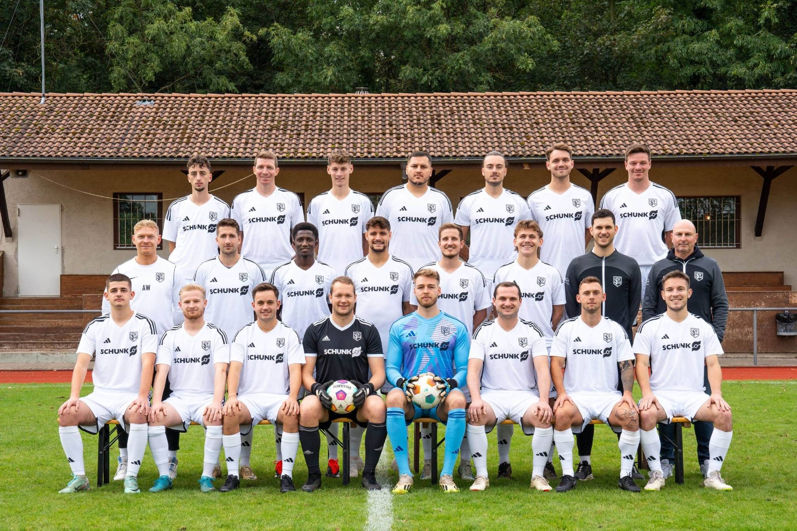
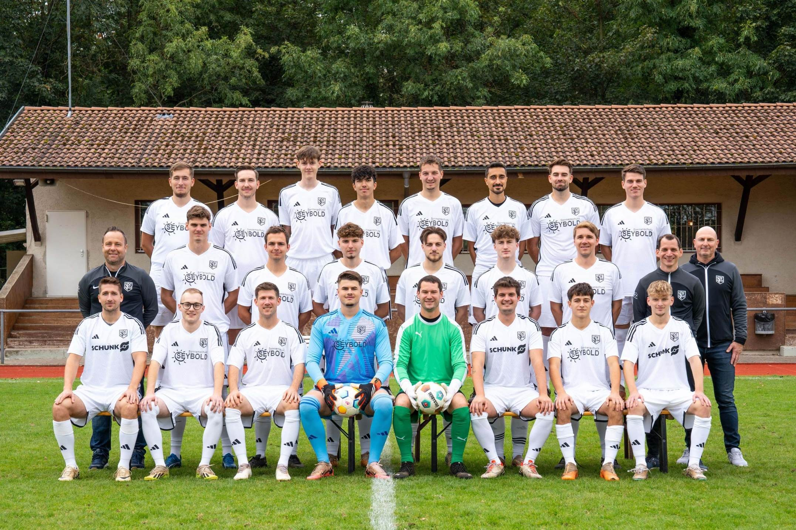

Zwei Mannschaften, eine Leidenschaft. Hier findest du Kader, Trainingszeiten, Spielplan und Tabelle unserer Aktiven.
Unser Aushängeschild kämpft Woche für Woche um Punkte in der Bezirksliga Franken. Heimspiele sonntags um 15:00 Uhr auf unserem Sportgelände.

| Tag | Uhrzeit | Ort |
|---|---|---|
| Dienstag | 19:30 – 21:00 | Lauffen |
| Donnerstag | 19:30 – 21:00 | Lauffen |
Die Saison 2025/26 ist beendet. Der Spielplan der neuen Bezirksliga-Saison wird vom WFV im Sommer veröffentlicht – bis dahin genießen wir die wohlverdiente Pause.
Quelle: fussball.de – die Sportfreunde belegen am Saisonende Platz 4.
| # | Verein | Sp | S | U | N | Tore | Diff | Pkt |
|---|---|---|---|---|---|---|---|---|
| 1 | FC Union Heilbronn | 30 | 21 | 4 | 5 | 87:29 | +58 | 67 |
| 2 | FSV Schwaigern | 30 | 18 | 8 | 4 | 94:36 | +58 | 62 |
| 3 | Aramäer Heilbronn | 30 | 18 | 8 | 4 | 77:29 | +48 | 62 |
| 4 | Spfr Lauffen | 30 | 16 | 9 | 5 | 59:33 | +26 | 57 |
| 5 | TG Böckingen | 30 | 16 | 8 | 6 | 79:39 | +40 | 56 |
| 6 | FSV Friedrichshaller SV | 30 | 14 | 7 | 9 | 76:52 | +24 | 49 |
| 7 | TSV Pfedelbach | 30 | 11 | 12 | 7 | 58:54 | +4 | 45 |
| 8 | SG Sindringen/Ernsbach | 30 | 12 | 4 | 14 | 49:49 | 0 | 40 |
| 9 | SGM Mulfingen/Hollenbach II | 30 | 11 | 6 | 13 | 58:69 | -11 | 39 |
| 10 | TSV Botenheim | 30 | 11 | 5 | 14 | 76:88 | -12 | 38 |
| 11 | SV Wachbach | 30 | 10 | 6 | 14 | 45:62 | -17 | 36 |
| 12 | Spfr Untergriesheim | 30 | 10 | 4 | 16 | 58:67 | -9 | 34 |
| 13 | TSV Erlenbach | 30 | 8 | 6 | 16 | 31:76 | -45 | 30 |
| 14 | SG Stetten-Kleingartach | 30 | 9 | 2 | 19 | 49:79 | -30 | 29 |
| 15 | TSV Neuenstein | 30 | 6 | 2 | 22 | 48:99 | -51 | 20 |
| 16 | SGM Markelsheim/Elpersheim | 30 | 2 | 3 | 25 | 30:113 | -83 | 9 |

Mit Herz und Leidenschaft kämpft unsere Zweite in der Kreisliga A. Wer Spaß am Fußball und Vereinsleben sucht, ist hier genau richtig.
| Tag | Uhrzeit | Ort |
|---|---|---|
| Dienstag | 19:30 – 21:00 | Lauffen |
| Donnerstag | 19:30 – 21:00 | Lauffen |
Die Saison 2025/26 ist beendet. Sobald der Spielplan der Kreisliga A1 für die neue Saison feststeht, findest du hier die nächsten Begegnungen unserer Zweiten.
Endstand nach 32 Spieltagen. Quelle: fussball.de – Spfr Lauffen II auf Platz 11.
| # | Verein | Sp | S | U | N | Tore | Diff | Pkt |
|---|---|---|---|---|---|---|---|---|
| 1 | SGM MassenbachHausen | 32 | 27 | 5 | 0 | 126:20 | +106 | 83 |
| 2 | SV Schluchtern | 32 | 26 | 4 | 2 | 111:31 | +80 | 82 |
| 3 | SGM Fürfeld/Bonfeld | 32 | 20 | 4 | 8 | 99:48 | +51 | 64 |
| 4 | TSV Güglingen | 32 | 17 | 4 | 11 | 94:56 | +38 | 55 |
| 5 | VfL Brackenheim | 32 | 16 | 7 | 9 | 77:51 | +26 | 55 |
| 6 | TSV Talheim | 32 | 14 | 5 | 13 | 80:67 | +13 | 47 |
| 7 | FSV Schwaigern II | 32 | 14 | 5 | 13 | 54:55 | -1 | 47 |
| 8 | SV Leingarten | 32 | 13 | 4 | 15 | 80:81 | -1 | 43 |
| 9 | SC Abstatt | 32 | 13 | 4 | 15 | 64:82 | -18 | 43 |
| 10 | SC Ilsfeld | 32 | 12 | 6 | 14 | 51:59 | -8 | 42 |
| 11 | Spfr Lauffen II | 32 | 12 | 6 | 14 | 54:73 | -19 | 42 |
| 12 | TSV Cleebronn | 32 | 12 | 5 | 15 | 56:63 | -7 | 41 |
| 13 | SV Heilbronn am Leinbach | 32 | 12 | 4 | 16 | 67:89 | -22 | 40 |
| 14 | SGM NordHeimHausen | 32 | 12 | 3 | 17 | 65:84 | -19 | 39 |
| 15 | TGV Dürrenzimmern | 32 | 9 | 4 | 19 | 43:77 | -34 | 31 |
| 16 | Spvgg Heinriet | 32 | 7 | 2 | 23 | 58:99 | -41 | 23 |
| 17 | GSV Eibensbach | 32 | 0 | 0 | 32 | 11:155 | -144 | 0 |
Hinweis: SGM MassenbachHausen wurden 3 Punkte abgezogen (in der Wertung berücksichtigt).